A primeira
edição.
O início de tudo. A primeira edição marcou o nascimento da Copa Santa Luzia e abriu caminho para que equipes e torcedores passassem a fazer parte dessa história.
2025 • O COMEÇO COPA SANTA LUZIA
Voltar ao campeonato
COPA SANTA LUZIA
Voltar ao campeonato
MAIS QUE UMA COMPETIÇÃO
Conheça a Copa Santa Luzia, acompanhe sua identidade e fique por dentro dos registros e novidades pelos canais oficiais.
C O P A S A N T A L U Z I A
A Copa Santa Luzia nasceu em 2025 com a vontade de transformar a paixão pelo futebol em uma experiência de competição, união e participação. Desde o início, cada partida passou a fazer parte de uma história construída por atletas, equipes, torcida e organização.
Hoje, celebramos duas edições realizadas. São duas etapas importantes de uma caminhada que segue ganhando força, criando memórias e fortalecendo o esporte em nossa comunidade.
O início de tudo. A primeira edição marcou o nascimento da Copa Santa Luzia e abriu caminho para que equipes e torcedores passassem a fazer parte dessa história.
2025 • O COMEÇOUma nova etapa, com a experiência da primeira edição e a vontade de continuar fazendo a competição crescer. Mais um capítulo construído dentro e fora de campo.
2 EDIÇÕES REALIZADAS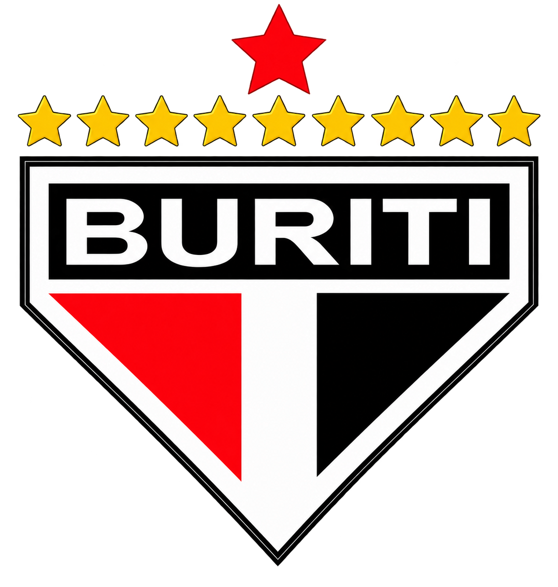
ATUAL CAMPEÃO
O Buriti EC fez história ao conquistar o título nas duas edições da Copa Santa Luzia. Bicampeão da competição, o clube marcou seu nome nesta trajetória e se tornou o grande destaque das duas primeiras edições.
Registros oficiais compartilhados no Instagram da Copa Santa Luzia. Cada publicação guarda um momento da nossa caminhada.
VER PERFIL COMPLETO ↗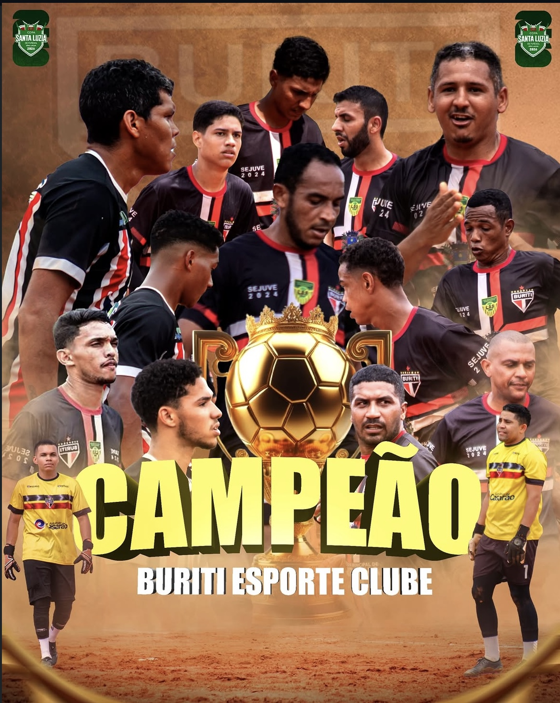
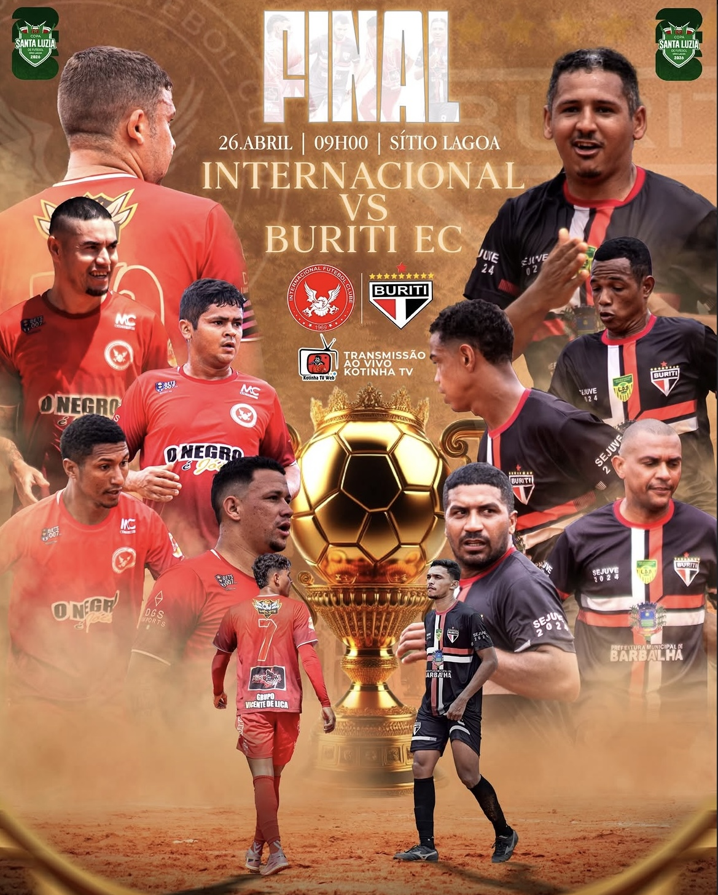
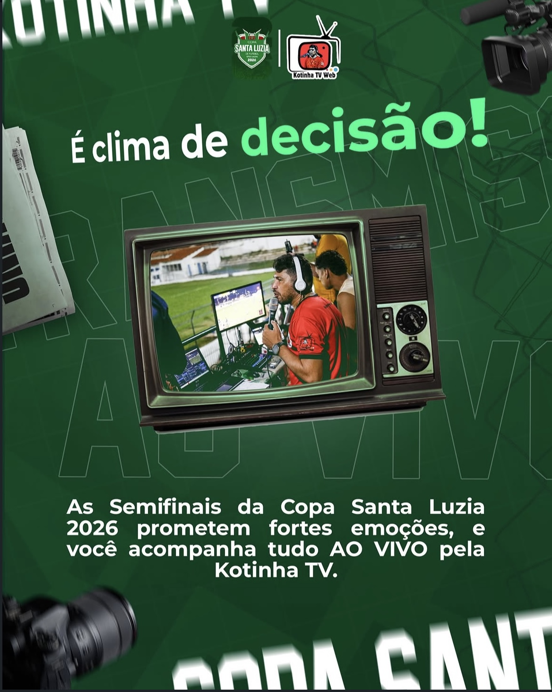
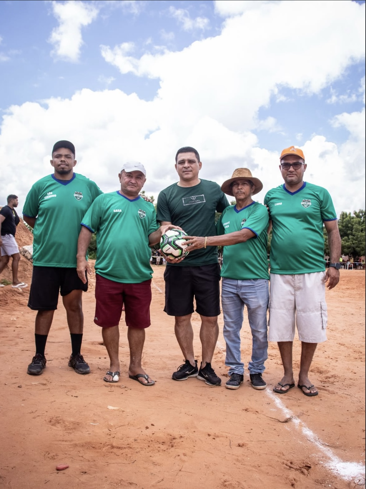
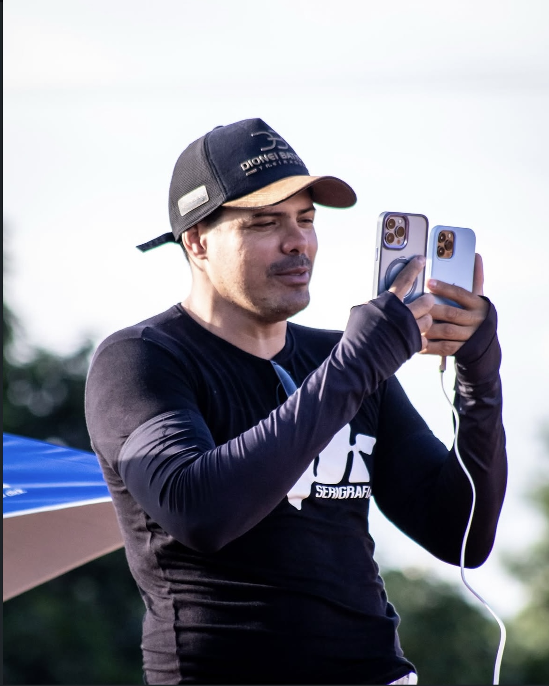
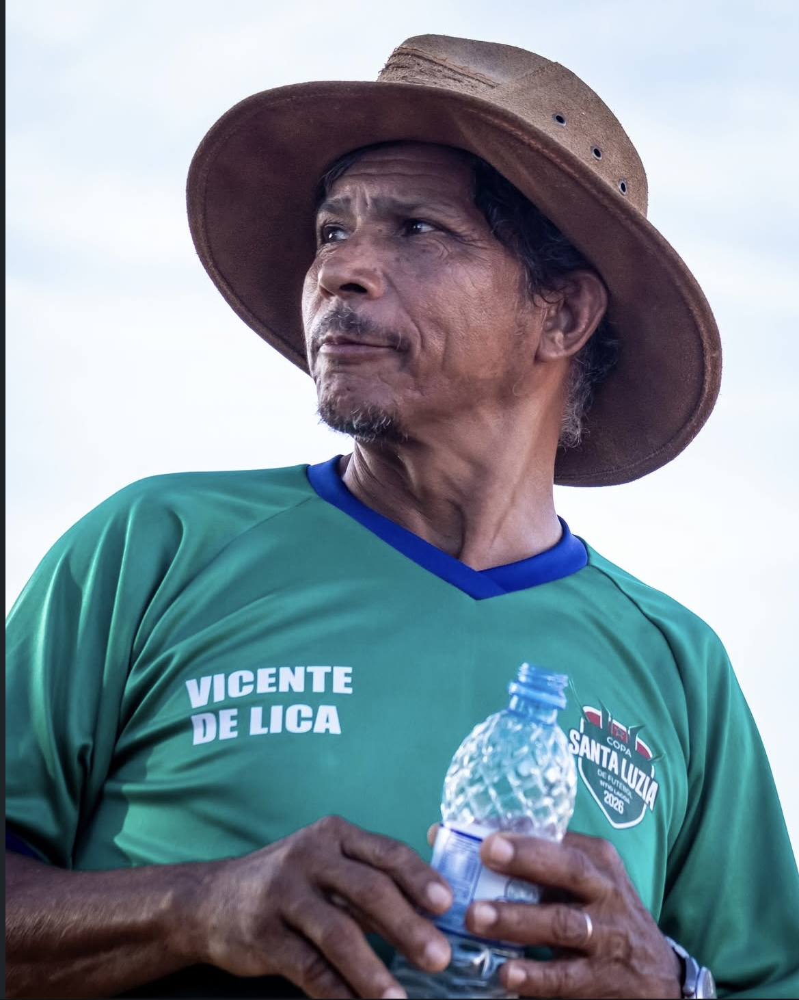
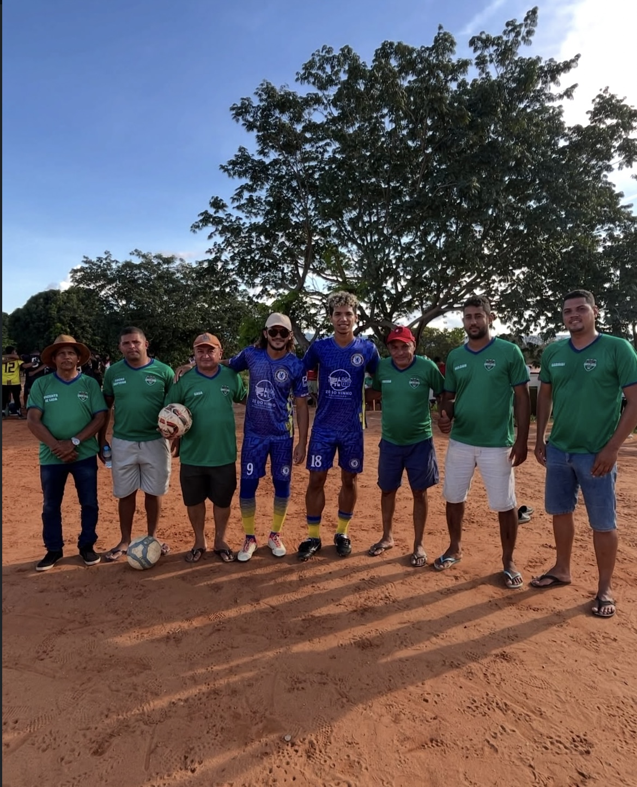
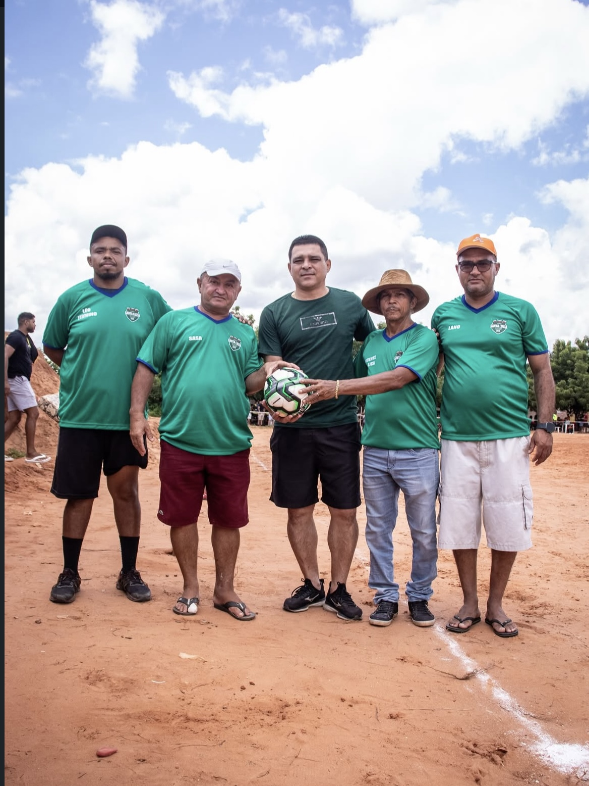
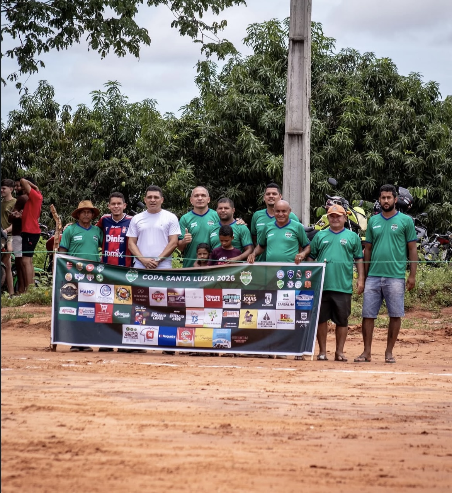
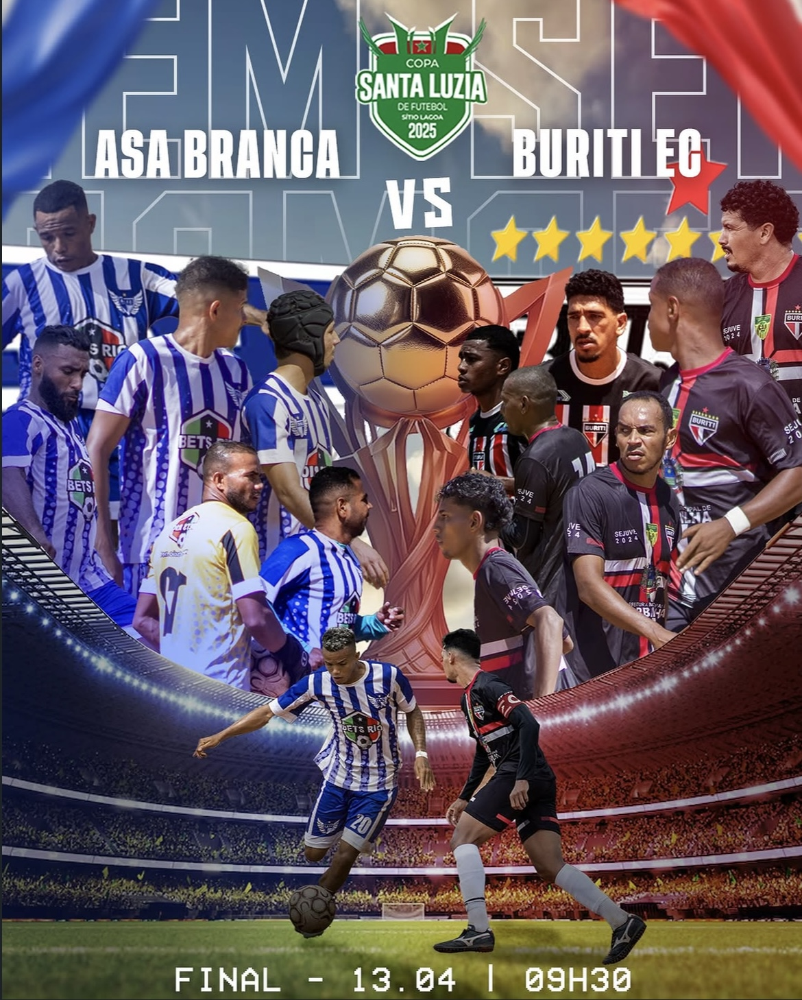